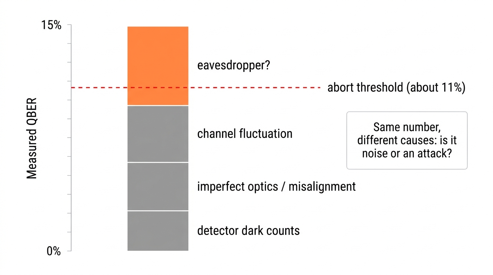

How Robust Is BB84 Under Realistic Noise and Imperfect Hardware?

In one sentence
BB84 is provably secure on paper — but real lasers, fibres and detectors are imperfect, so how far can a practical system drift from the ideal before its key becomes unreliable, and can we tell ordinary noise apart from an eavesdropper?
What is the problem?
A bank in Vancouver wants to send encryption keys to its data centre across the city. Instead of trusting mathematics that a future computer might break, it uses quantum key distribution (QKD): single particles of light sent down an optical fibre. The famous promise of QKD is that anyone who tries to listen in will inevitably disturb the light, and the bank will notice.
One morning the system reports that its error rate has crept up from 2% to 5%. Is that a spy? Or is it just that the fibre runs past a construction site, the building got colder overnight, and one of the detectors is getting old? The security of the whole system rests on how that question is handled.
The oldest and best-known QKD protocol is BB84, proposed by Charles Bennett and Gilles Brassard in 1984. Its security has been proved rigorously — for an idealised system. This open problem asks how far real BB84 can deviate from those ideal assumptions before either its security or its ability to produce useful key breaks down, and whether a rising error rate can be read as hardware imperfection or as an attack.
How BB84 works, in plain words
Two people, traditionally called Alice (sender) and Bob (receiver), want to share a random secret key. They have a quantum channel (for example a fibre carrying single photons) and an ordinary public channel (for example the internet), which anyone can read but nobody can tamper with — in practice this is ensured by message authentication.
- Alice picks random bits and random bases. For each photon she chooses a bit (0 or 1) and one of two "bases" for encoding it in the photon's polarisation: the rectilinear basis (+), where 0 is vertical and 1 is horizontal, or the diagonal basis (×), where 0 and 1 are the two diagonals.
- Bob measures in a random basis. He does not know Alice's basis, so he guesses + or × for each photon. If he guesses the same basis, he reads Alice's bit correctly. If he guesses the other basis, quantum mechanics gives him a completely random result.
- Sifting. Afterwards, over the public channel, they announce which basis they used for each photon — never the bit values. They keep only the positions where the bases matched (about half) and throw the rest away. What is left is the sifted key.
- Estimating the error rate. They publicly compare a random sample of the sifted bits. The fraction that disagree is the quantum bit error rate (QBER). Those sample bits are then discarded.
- Error correction. Their remaining bits still differ in a few places, so they run a classical error-correction protocol over the public channel to make their keys identical. This leaks some information, which has to be accounted for.
- Privacy amplification. Finally they "compress" the corrected key with a randomly chosen hash function into a shorter one. Even if an eavesdropper knew a fair amount about the longer key, she knows essentially nothing about the shorter one. The more errors they saw, the more they must compress.

Why can an eavesdropper be detected?
Suppose a spy, Eve, intercepts each photon, measures it and sends a fresh copy on to Bob. Like Bob, she does not know Alice's basis, so she has to guess. Half the time she guesses wrong; her measurement then gives a random result, and the photon she re-sends is in the wrong basis. When Bob later measures in Alice's basis, he gets the wrong bit half of those times. Overall, this simple attack introduces errors in about 25% of the sifted key — very easy to notice.
Eve cannot avoid this by copying the photon first and measuring the copy: the no-cloning theorem says an unknown quantum state cannot be copied perfectly. Cleverer attacks introduce fewer errors but gain less information. The deep result of the security proofs is that any information Eve gains must show up as errors, and that the QBER tells Alice and Bob how much to compress during privacy amplification.
Why does it matter?
QKD is one of the few cryptographic tools whose security does not depend on a problem being hard to compute, which matters as quantum computers threaten today's public-key cryptography. Commercial QKD systems and city-scale networks already exist. But every real attack on QKD so far has targeted the gap between the ideal model and the real hardware, not the protocol itself. Understanding that gap is not an academic detail — it is where security actually lives or dies.
The key idea: noise is paid for, imperfections can be exploited
It helps to separate two very different things that real hardware does.
Noise raises the QBER: detector dark counts (clicks with no photon), small misalignments in the polarisation optics, polarisation drifting in the fibre as temperature changes. Standard security proofs handle this in a conservative way: they assume every error might be caused by Eve. So noise does not break security; it costs key. More errors mean more information leaked during error correction and more compression during privacy amplification. With the standard one-way post-processing, once the QBER passes roughly 11%, nothing is left and Alice and Bob must abort.

Imperfections are more dangerous, because they can break the assumptions of the proof without raising the QBER at all:
- Not really single photons. Most systems use very weak laser pulses. Occasionally a pulse contains two or more photons, and Eve can in principle split off one of them and keep it, learning the bit without disturbing the others (the photon-number-splitting attack).
- Loss. Fibres absorb light — after tens of kilometres most photons never arrive. Loss alone does not cause errors, but it shrinks the key rate and gives Eve room to hide her attacks among the missing photons.
- Detector quirks. Real single-photon detectors have limited efficiency, dead times and, in some designs, can be "blinded" with bright light and then controlled from outside. Demonstrated attacks on commercial systems used exactly this — and they produced no unusual QBER.
- Imperfect state preparation. If Alice's polarisations are slightly off, or the basis choice leaks through timing or other side channels, the clean picture of "two perfectly random bases" no longer holds.
- Finite key. Proofs often assume a huge number of photons. Real systems work in blocks of finite size, so the QBER estimate itself has statistical uncertainty, which has to be paid for with extra compression.
Why is it hard?
- Many small deviations add up. Each imperfection may be manageable alone; together they interact in ways that are hard to bound.
- Models of the hardware are never complete. A security proof can only cover the imperfections someone thought to include. Attacks tend to come from the ones nobody modelled.
- The QBER is one number. It cannot, on its own, say why errors are happening. Separating noise from attack needs more information than the standard protocol collects.
- Channels change. Real fibre and free-space links fluctuate with temperature, vibration and weather, so the "normal" noise level is itself a moving target (see OP-17).
- Being too conservative also fails. Treating every fluctuation as an attack keeps the system secure but may leave it producing almost no key, which makes it useless.
What has been tried so far
- Security proofs that include noise — showing that BB84 remains secure as long as the QBER is below a threshold, and how much key can be extracted at each error rate.
- Proofs that include imperfect devices — extending security to sources and detectors with known flaws, at the cost of a lower key rate.
- Decoy states — Alice randomly varies the intensity of her pulses. Because Eve cannot tell which pulses are decoys, any attack that treats multi-photon pulses differently shows up in the statistics. This largely closes the photon-number-splitting loophole and is now standard.
- Measurement-device-independent QKD — a protocol in which the detectors can be completely untrusted, removing the whole class of detector attacks.
- Quantum hacking studies — research groups deliberately attacking real QKD hardware to find the gap between model and device, which then leads to countermeasures.
- Finite-key analysis — security statements that hold for realistic block sizes rather than infinitely long keys.
What remains open, in my view, is a practical, quantitative map of the space between "ideal" and "broken": for a given set of realistic imperfections, how much margin is left — and how a running system can use more than a single error rate to judge whether something has changed.
How I would approach it
- Build a transparent simulation of BB84 in which each non-ideality — loss, dark counts, misalignment, multi-photon pulses, finite block size, drifting channel — has its own adjustable knob.
- Turn the knobs one at a time, then together, and record the QBER and the secure key rate predicted by standard analyses. This gives a map of where performance degrades gracefully and where it falls off a cliff.
- Add simulated attacks (intercept-resend, photon-number splitting, simple detector-control models) and look at richer statistics than the QBER alone: errors in each basis separately, timing of errors, detection rates, decoy-state statistics.
- Ask whether those richer signals can separate "the hardware is drifting" from "someone is interfering" — while keeping the conservative security guarantee intact, since any such classifier must only ever be used to diagnose, never to relax the security bound.
Questions still open
- For realistic combinations of imperfections, how much margin is left before the key rate collapses — and which imperfection dominates?
- Beyond the total QBER, which observable statistics best distinguish honest noise from an attack?
- Can machine-learning diagnostics help monitor a QKD link without weakening its proven security? (an AI-security question in a quantum setting)
- How should a system react when the noise slowly drifts — re-calibrate, shorten the key, or stop? (see OP-17)
- Which hardware imperfections are still not covered by any security proof?
- The same "noise or attack?" question appears for self-driving sensors (OP-15) — are there shared methods?
This problem is the foundation for the other BB84 questions on the list, starting with adapting BB84 to changing channel conditions (OP-17).
Work on this together
I am actively looking for collaborators here, especially people with hands-on QKD or quantum-optics experience. If you build or test QKD hardware, work on security proofs, or study quantum hacking — or you think my framing misses something essential — please reach out.
Reach out about OP-16Further reading
- Bennett & Brassard — Quantum Cryptography: Public Key Distribution and Coin Tossing (Proc. IEEE International Conference on Computers, Systems and Signal Processing, 1984)
- Shor & Preskill — Simple Proof of Security of the BB84 Quantum Key Distribution Protocol (Physical Review Letters, 2000)
- Gottesman, Lo, Lütkenhaus & Preskill — Security of Quantum Key Distribution with Imperfect Devices (Quantum Information & Computation, 2004)
- Lo, Ma & Chen — Decoy State Quantum Key Distribution (Physical Review Letters, 2005)
- Scarani et al. — The Security of Practical Quantum Key Distribution (Reviews of Modern Physics, 2009)
- Lydersen et al. — Hacking Commercial Quantum Cryptography Systems by Tailored Bright Illumination (Nature Photonics, 2010)
- Lo, Curty & Qi — Measurement-Device-Independent Quantum Key Distribution (Physical Review Letters, 2012)